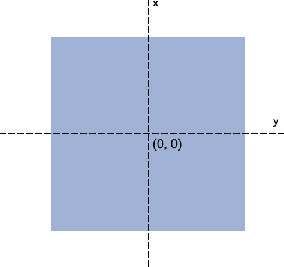
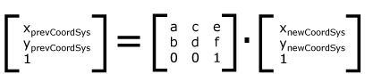

照片墙 photo gallery


本ppt利用开源在线html presentation制作框架deck.js编写。为了更流畅的浏览ppt，请使用chrome等主流浏览器
note: Ctrl/Command and + or - to zoom in and out if slides don’t fit.
点击任意图片浏览：
数据来自：http://caniuse.com/( S = Supported; N = not supported; P = partially supported; U = Support unknown; )
注意：主流浏览器webkit，firefox，opera的支持，属性名分别为 -webkit-transform，-moz-transform，-o-transform;需要有前缀。
transition: <‘transition-property’> || <‘transition-duration’> || <‘transition-timing-function’> || <‘transition-delay’> [, ...]
有四个子项: 属性、持续时间、值变化算法类型、延迟开始时间， 且顺序一定，但每项都可选。
使用过photoshop的人应该知道里面的Ctrl+T自由变换, transform也是同样效果。它可作用于内联(inline)元素和块级(block)元素。功能包含：rotate旋转，skew拉伸，scale压缩，translate偏移。
我们可以看出：所谓的transforms变换就是由多个transform-function组成，即rotate旋转，skew拉伸，scale压缩，translate偏移等变换功能组成。 当然变换会2D transform-function 和 3D transform-function
我们先看下，最常见的四个2D transform-function变换
允许你通过传递一个度数值来转动一个对象；
允许你通过传递一个度数值来拉伸一个对象；
允许你通过传递一个(x%, y%)值来压缩一个对象；
允许你通过传递一个(x, y)来偏移一个对象；
理解translate偏移，就得知道2D的坐标系：
注意：
使当前元素围绕着设置的原点变换或旋转，该属性只有在设置了transform属性的时候起作用。
最多可设置原点(x, y, z)三个方向值，默认值为： 50% 50% 0。 
CSS3中的Matrix矩阵指的是一个方法，书写为matrix()和matrix3d(), 前者是2D平面的元素点变换(transform)，后者则是3D变换。2D变换矩阵为3*3, 我们这里先介绍2D matrix()
当你看到这里时，说明我们常用的动画变换你都已经知道了，但如果要深入的了解css3 transform,那就需要了解Matrix()，因为Matrix()是他们的基础实现。
有这样一个观点： 其实无论是旋转还是拉伸什么的，本质上都是应用的matrix()方法实现的（修改matrix()方法固定几个值），只是类似于transform:rotate这种表现形式，我们更容易理解，记忆与上手。
怎么理解这句话？
大家想想线性代数里有个概念：矩阵变换，公式如下：

这个公式，就反映了：在2D坐标系下，只要有(a, b, c, d, e, f) 给定，一个(x, y)会变换成另个(x', y')。也可以看出任意的(x', y')总会有一个(a, b, c, d, e, f) 变换矩阵来对应。这就是2D坐标系上的矩阵变换过程。
而现在我们就是要来看看使点进行变换的矩阵。我们可以看到css matrix的语法是：
再使用矩阵乘法的原理，可推出之前的矩阵变换过程图亦为：

那ax+cy+e的意义是什么？
ax+cy+e为变换后的水平坐标，bx+dy+f表示变换后的垂直位置。
现在我们再看看常见四种变换（rotate, skew, scale,translate）的矩阵变换表示?
transform: matrix(1, 0, 0, 1, tx, ty); /* a=1, b=0, c=0, d=1, e=tx, f=ty */ 
假设是(0, 0)，即x=0, y=0。 于是，变换后的x坐标就是ax+cy+e = 1*0+0*0+tx =tx, y坐标就是bx+dy+f = 0*0+1*0+ty =ty.
总结: 聪明的你可能以及意识到了，matrix表现偏移就是：transform: matrix(与我无关, 哪位, 怎么不去高考, 打麻将去吧, 水平偏移距离, 垂直偏移距离);
transform: matrix(sx, 0, 0, sy, 0, 0) 
我们可以套用公式，就有：
x' = ax+cy+e = sx*x+0*y+0 = sx*x;
y' = bx+dy+f = 0*x+sy*y+0 = sy*y;
也就是matrix(sx, 0, 0, sy, 0, 0)，等同于scale(sx, sy);
matrix(cosθ,sinθ,-sinθ,cosθ,0,0); 
我们可以套用公式，就有：
x' = x*cosθ-y*sinθ+0 = x*cosθ-y*sinθ
y' = x*sinθ+y*cosθ+0 = x*sinθ+y*cosθ
也就是matrix(cosθ,sinθ,-sinθ,cosθ,0,0)，等同于transform:rotate(θdeg);;
说句老实话，就旋转而言，rotate(θdeg)这种书写形式要比matrix简单多了，首先记忆简单，其次，无需计算。
matrix(1 tan(θy) tan(θx) 1 0 0);
我们可以套用公式，就有：
x' = x+y*tan(θx)+0 = x+y*tan(θx)
y' = x*tan(θy)+y+0 = x*tan(θy)+y
其中，θx表示x轴倾斜的角度，θy表示y轴，两者并无关联。
目前属性值为：matrix(1,0,0,1,0,0)
x轴倾斜角度(0-89)：
y轴倾斜角度(0-89)：
我想有人会奇怪，既然CSS3 transform中提供了像skew, rotate, …效果，那还需要掌握和熟悉让人头大的矩阵方法干嘛呢？
确实，对于一般地交互应用，transform属性默认提供的些方法是足够了，但是，一些其他的效果，如果transform属性没有提供接口方法，那你又该怎么办呢？
比如我们需要实现轴对称变换(y=kx)
目前属性值为：matrix(1,0,0,1,0,0)
我们之前介绍了2D transform,现在看怎么设置 3D transform.
通过该属性来决定指定元素的子节点是在2D还是3D坐标系中。
语法: flat | preserve-3d 。 默认值为 flat。
通过该属性来决定指定元素的后面元素是否可见。
语法: visible | hidden。 默认值为 visible。
通过该属性可以决定元素是2D transform还是3D transform。
语法: none | length 。 默认值为 none。
该属性可设置视角的起始点x/y平面所有位置，可理解人的视角眼睛。
语法: 有两个值，可选值为：percentage | length | left | center | right | top | bottom。 默认值为 。
注意： Z轴的方向， y轴正数方向是向下的。
之前我们看了四种2D transform-function变换，现在我们再看看对应的四种3D的transform-function变换
rotateX(deg), rotateY(deg), rotateZ(deg): 分别表示对X，Y, Z轴进行旋转。 举现实生活中的例子：
邹凯的体操单杠运动是rotateX。 
蔡依林姐姐的钢管舞是rotateY。 
旋转飞刀的特技表演是rotateZ。
Rotate 3d(x, y, z, rotation angle) : 设置对任意指定轴进行旋转。x, y, z指定轴(与transform-origin组成两点决定一条直线)，rotation angle表示旋转角度
rotate3d(1, 1, 0, 60deg)
rotate3d(1,-1, 1,60deg)
translateX(x), translateY(y), translateZ(z): 分别表示对X，Y, Z轴方向偏移。 看看demo效果：
语法：translate3d(tx, ty, tz)。 其中tx, ty, tz 分别表示对X，Y, Z轴方向偏移
语法：scale3d(sx, sy, sz)。 其中sx, sy, sz 分别表示对X，Y, Z轴方向缩放比例
scaleX(sx) is a shorthand for scale(sx, 1) or for scale3d(sx, 1, 1).
scaleY(sy) is a shorthand for scale(1, sy) or for scale3d(1, sy, 1).
scaleZ(sz) is a shorthand for scale3d(1, 1, sz).
目前不支持：skew3d.
skewX(deg) is a shorthand for skew(deg) or skew(deg, 0) .
skewY(deg) is a shorthand for skew(0, deg).
/
#